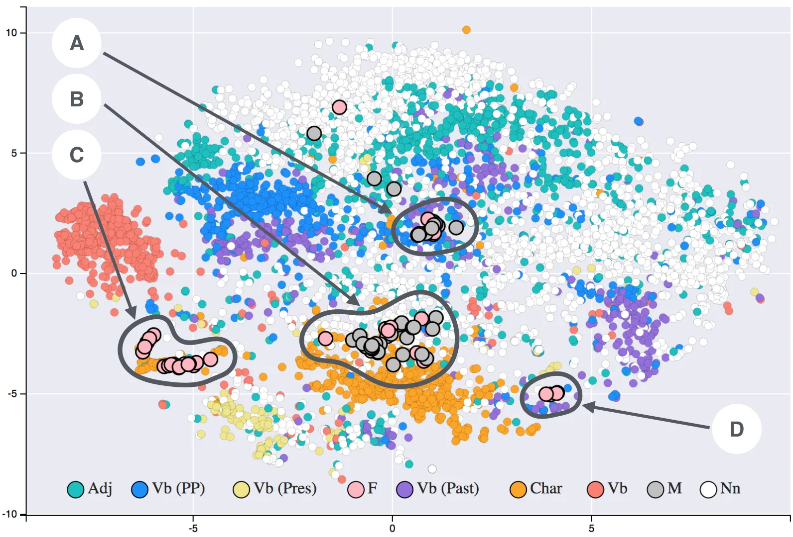
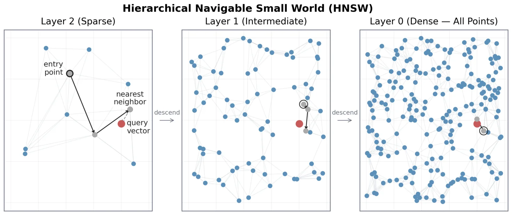

Unquote searches the dialogue of 2,644 films. Type a quote and it finds the line. Type the quote the way you misremember it and it finds the line you meant. Describe a scene in words no character ever says ("a boy in leg braces outruns the bullies chasing him") and it finds the moment. The app is SvelteKit; everything else, the text, the 384-dimension line vectors, the 768-dimension scene vectors, the HNSW indexes over all of them, and the analytics, lives in a single ClickHouse server. There is no separate vector database.
The corpus
Film metadata (titles, years, vote counts, posters, genres, keywords) comes from TMDb. Dialogue is parsed from the publicly available transcript pages on Springfield! Springfield!: the extractor replays the site's search to find each film's slug, checks the year, and splits the script container on <br> boundaries into subtitle cues. Every HTTP response is cached on disk under a SHA1-of-URL key, and the pipeline runs offline against that cache; network access requires an explicit ALLOW_NETWORK=1, so a bug can never turn into a crawl.
Films the primary source misses or mangles get better text through rescue and upgrade passes: IMSDb screenplay drafts, a second transcript site, and an OpenSubtitles layer that drains a checkpointed download queue at five subtitle files per day, the free-tier allowance. A replacement only ships if it scores better than what it replaces. The pipeline is a chain of standalone stages reading and writing JSONL artifacts, so any stage reruns in isolation; a dev slice of the top 300 films by votes keeps iteration fast, and FULL=1 selects everything.
Cues are not lines

.jpg){kind=link}
Subtitle cues are display fragments, not spoken lines. Sentences split across cues, two speakers share one cue behind - markers, sound labels ride along in brackets, and OCR damage from ripped subtitles is everywhere. The utterance builder rebuilds spoken lines from ordered cues: dash-marked speaker turns split apart, a fragment that starts lowercase merges into the previous buffer unless it ended on a hard stop (dialogue never continues a sentence past ? or !), and an ellipsis handing off to an ellipsis rejoins one thought split for timing ("Get busy living... / ...or get busy dying.").
Lyrics get run detection: music-marked cues act as anchors, nearby anchors bridge into intervals, and interval edges extend over unpunctuated neighbors, with wider gaps for Music-genre films whose marking is spottier. A second detector catches entirely unmarked songs by their shape, long runs of title-case cues that never end in punctuation, but only unconditionally at sixteen cues or more, because Interstellar's recited "Do not go gentle" reads exactly like a verse. OCR repair is gated the same way: the classic subtitle confusion of capital I and lowercase l ("lf you build it", "wouIdn't") is rewritten only in films showing at least three instances of the signature, so a clean transcript where "lt." is a lowercased Lieutenant is never touched. Stage directions, speaker labels, title cards fused into cues, and credits all go. What remains is about 3.7 million utterances, each carrying its film position as a 0-to-1 arc.
Transcript health
Every film gets a quality score from punctuation density, hit rate against a thousand-word common-English dictionary, OCR artifacts per thousand cues, and mean cue length, weighted 0.3, 0.3, 0.3, 0.1. The worst decile carries a downrank flag; a transcript with over 200 tokens and a dictionary rate under 0.2 is flagged as not English regardless of how clean it looks. Both flags load into ClickHouse and gate the fuzzier search surfaces, since a wrong-language transcript matches its own language, not meaning.
Embeddings

{kind=link}
Lines embed with bge-small-en-v1.5 (384 dimensions, mean pooling); beats, scene summaries, and segments embed with bge-base-en-v1.5 (768 dimensions). Queries follow the bge retrieval convention and get the prefix "Represent this sentence for searching relevant passages:" while passages do not. The same models must encode stored rows and live queries, so the contract is a shared constant: the web app runs quantized ONNX ports of both models through Transformers.js, warmed at server boot so no user pays the cold start, with a small LRU cache over query vectors.
The corpus itself embeds on an Apple GPU through sentence-transformers on MPS, 3.4x faster than the JavaScript reference implementation, which stays around as the definition of the encoding: any new runtime or model change must pass a validator requiring per-row cosine of at least 0.999 against reference vectors before its output ships. After a text-touching pipeline change, a reconcile stage copies vectors for unchanged rows byte for byte and re-embeds only what changed.
ClickHouse as the vector database

.png){kind=link}
The lines table is a MergeTree ordered by (movie_id, seq) with two skipping indexes: a tokenbf_v1 bloom filter over the normalized text for keyword search, and a vector_similarity HNSW index over the embedding column, cosine distance, bf16-quantized so the index takes half the memory. The HNSW index answers nearest-neighbor queries in under 100 ms where a brute-force scan takes over a second. Data loads never touch the live tables: each load writes staging tables without the vector index, adds and materializes the index once after all rows land, then swaps with EXCHANGE TABLES, so the running site never sees a partial corpus. The ladder tables build their indexes one at a time under a hard memory cap, because parallel HNSW builds have taken the box down.
Four arms and a fusion
A search fans out to parallel arms. The title arm catches queries that are exactly a film title. The exact arm finds verbatim substring matches with position() over normalized text. The keyword arm requires every query token via hasToken(), with tokens split on apostrophes because ClickHouse's tokenizer indexes "you're" as "you" and "re". The semantic arm embeds the query and takes the hundred nearest line vectors. The ranked lists merge with reciprocal rank fusion:
RRF scores top out around 0.05, and any hit the exact arm surfaced gets a flat +1, so verbatim matches always outrank fuzzy ones. Within the exact set the ordering is fame: identical lines embed identically, so among films that all say the queried words verbatim every arm's ranking is an arbitrary tie-break, and TMDb vote count is the only real signal left. A film that repeats a line ("May the Force be with you" four times in one movie) collapses to its best occurrence with a count. The results page draws a divider after the "strong" hits, at the largest relative score drop in the top 20 when that drop is at least 1.5x. And when the top hit came from the semantic arm alone and sits one to three word-substitutions from the query, it gets marked as the line you were probably trying to remember.
When nothing matches verbatim
A query with no exact match is a memory of meaning, not of words: a described scene, or a line split across speakers. Two more arms join. The beats arm searches exchange-width windows of dialogue (twelve utterances, stride six, so every line belongs to about two beats). The summaries arm searches generated scene summaries, which matter because they are phrased in the register memories are: event language, where the actual dialogue only shares words with your memory by luck. Both embed in the same 768-dimension space against the same query vector, so their cosine distances merge directly into one list, and summary hits map back to the beat opening the summarized span, so ranking uses the summary but the screen only ever shows real dialogue. These moment hits are weighted to outrank lines that merely share vocabulary with the query.
The context ladder
Above the line sits a ladder of derived context. Beats are the overlapping twelve-line windows. Segments are scene-sized spans cut where consecutive beats stop resembling each other: a boundary opens where the cosine between adjacent beat vectors falls below the film's own mean minus one standard deviation, \( \mu - \sigma \), subject to a two-to-twelve beat size range. A segment's vector is the L2-normalized mean of its member beats; a film's vector is the normalized mean of its segments. Film-to-film similarity scores every segment's best match against the other film, minus that segment's mean best across all films so dialogue that matches everything contributes nothing, then blends 70/30 with TMDb metadata similarity over genres, decade, and keywords. The top twelve neighbors per film load into ClickHouse, and the film vectors project to a 2D map with UMAP, seeded for a deterministic layout.
Genericness
Universal filler (greetings, arguments, "How is it? Horrible") sits near everything in embedding space and wins raw-cosine matching everywhere it appears. So every beat and every summary carries a genericness score: the mean cosine similarity to its top 32 nearest cross-film rows. Exact all-pairs at full corpus is around \(6 \times 10^{17}\) flops, a day of GPU, so the statistic is estimated against a fixed seeded sample of 10,240 rows; generic rows have thousands of near-neighbors and hit the sample everywhere, distinctive rows miss it everywhere, and the ordering the ranking needs is preserved. Downstream surfaces subtract it so only distinctive resonance wins.
Bridges between films
Every film page has a "what does this part remind you of" timeline: clicking a scene fetches its summary, its dialogue, and the nearest moments across the library, one per film. Comparing two whole films goes further. The bridge page (/movie/a/vs/b) finds candidate parallels in summary space, requiring a candidate to be a spike, at least 0.05 above what its scene scores against the whole other film on average, because a franchise's shared texture is a plateau, high everywhere and peaked nowhere. Each surviving candidate must then be corroborated in dialogue space: the best beat pair inside the two scenes has to clear a consensus floor, with genericness subtracted on both sides so films never bridge through their most ordinary scenes. Greedy one-to-one assignment stops magnet moments repeating, and fewer than two passing pairs renders an honest empty state. The thresholds were tuned on a comparison harness where unrelated controls (Toy Story vs Se7en) must go empty while related pairs keep three to five parallels.
The generated layer
Scene summaries and each film's five signature lines come from Claude run headless (claude -p) by a pipeline driver, and nothing it says is trusted. Five-quote picks must match a real transcript line, either verbatim or snapping to the nearest line above a similarity floor; anything else is dropped, and a film whose picks all fail stays unbanked so the next run retries it. Summaries are generated per segment window under a prompt that forbids proper nouns not present in the window, spoilers imported from outside it, and judgment words, and requires per-claim evidence as seq ranges; a lint checks all of it, and failing rows regenerate with their findings attached as feedback. The store is append-only JSONL keyed by input hash and prompt version, so corpus growth or a prompt bump regenerates only what changed, and a batch that hits a refusal bisects down to the single offending window and generates the rest.
Misquotes, phrases, near misses
A curated list catches famous misquotes: searching "Luke, I am your father" shows the actual line ("No, I am your father.") with the changed words highlighted by a word-level alignment. A query matching verbatim lines in at least eight distinct films earns a phrase card instead, computed corpus-wide in one aggregate query: film and occurrence counts, the earliest film to say it, a histogram of where in a film's arc the phrase lands, and per-decade usage normalized by how many corpus films each decade has, so uneven coverage cannot masquerade as a trend. Search quality is pinned by an eval suite of 53 real remembered-quote queries, each asserting its film appears in the top few results, run as a Playwright scoreboard.
One box
Production is a single netcup VPS (8 vCPU, 16 GB) running three containers under Docker Compose: ClickHouse, the SvelteKit node server with the model weights baked into the image, and Caddy for TLS, compression, and security headers. ClickHouse binds to localhost only; the app connects as a user that can read the corpus and insert only into the analytics tables, and data pushes arrive over SSH into the staging-swap path. Analytics are first-party and cookie-free: visitors count by an FNV-1a hash of IP and truncated user agent that rotates daily and never stores its inputs, and both Do Not Track and Global Privacy Control are honored. All server data derives from local pipeline artifacts, so there are no backups; a lost box rebuilds from scratch, provisioning script through DNS, in under an hour.